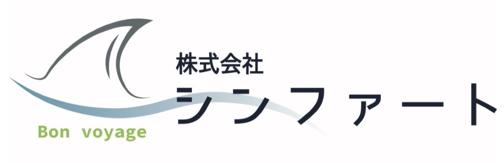
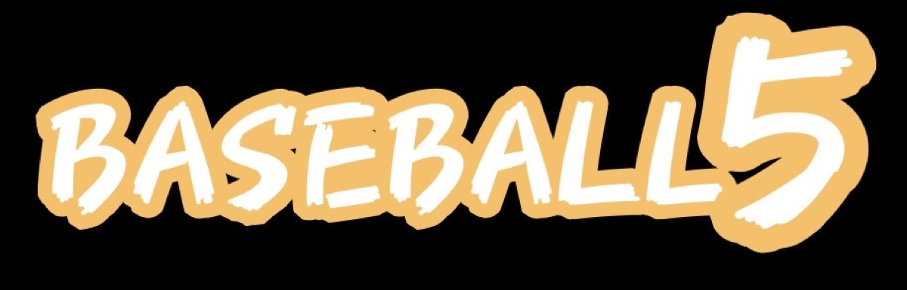
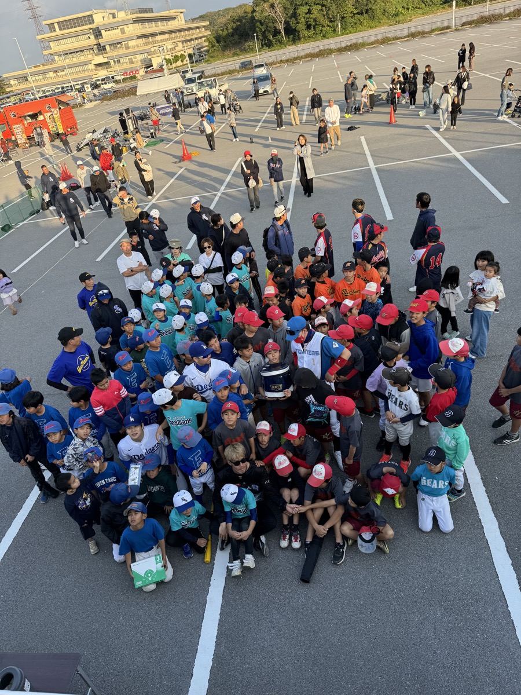
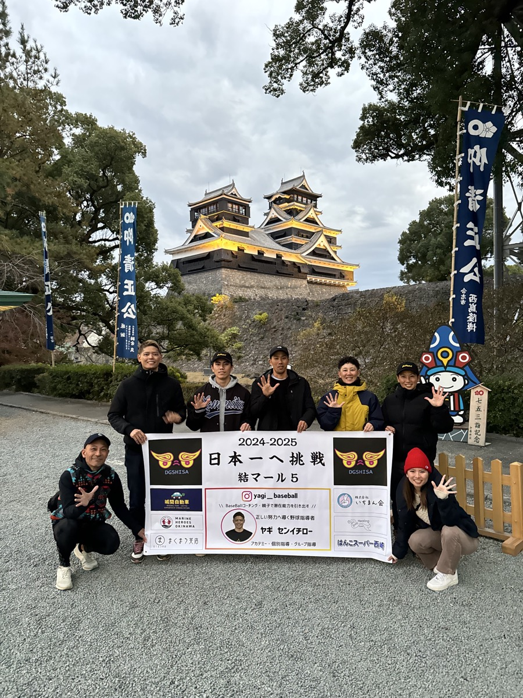
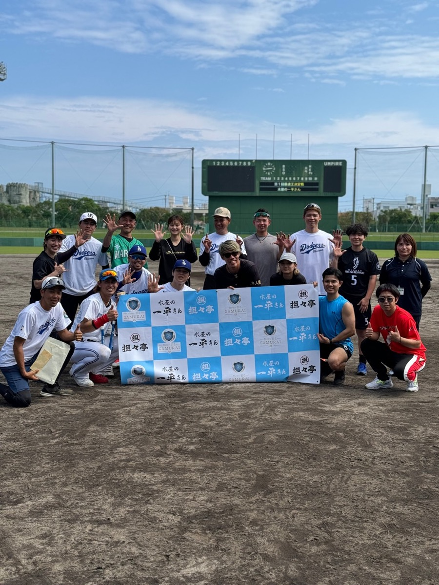
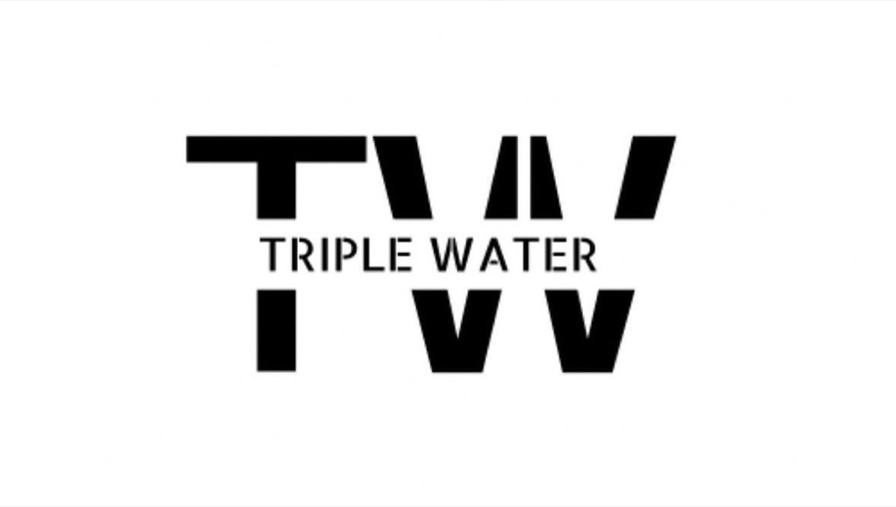

Yuimaar5 Official Website
沖縄から広がる 5人制ベースボール
結マール5は、一般社団法人ベースボール沖縄が運営するBaseball5チームです。 ボールひとつで始められる新しいアーバンスポーツを、沖縄の地域・学校・イベントへ届けます。
Games
沖縄のベースボールファイブを盛り上げる
About Yuimaar5
沖縄から世界へ挑戦する
結マール５は2024年に沖縄南部のメンバーを中心に発足したベースボールファイブ球団です。 メンバーそれぞれが学生時代や社会人に、沖縄や全国で野球やソフトボールで活躍した実績をもち、 今までの経験値を生かしてベースボールファイブを盛り上げている球団です。
子ども達向けのイベントや学校教育にて行う特別授業、体験会の実施など多岐にわたる活動で、 沖縄のベースボールファイブを盛り上げております。また、球団史上初の全国の舞台を目指して、 日々ベースボールファイブ技術の向上の環境を整えて練習を行なっています。

Contact
SNSにて活動を発信中！



学校・地域団体・企業イベントでの体験会、練習参加、交流戦、取材などの相談を受け付けます。 正式なメールアドレスや申込フォームが決まり次第、このページに追加できます。
Partner
PARTNERS
OFFICIAL PARTNER
